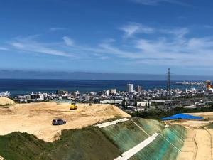
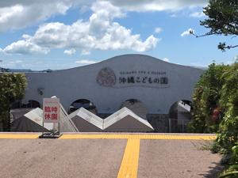
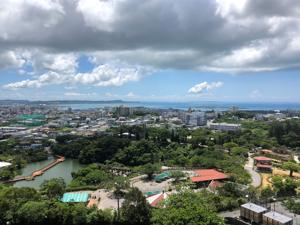
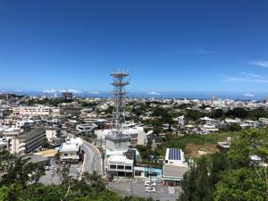

うるがいの話 ある日
最新: こどもの国へ行く
うるがいとは 前提知識です
カニの画像をクリックすると『うるがいの話』サイトを表示します
うるがい(ｳﾙｶﾞｲ urugai)とは、『もずくがに』の名前でとても大きくなります。
たながー（ﾀﾅｶﾞｰtanagaa）とは手長えびのことで、何種類かあり大きいのは車 エビぐらいになります。
ぶながー(bunagaa)とは、赤い髪の毛、赤い身体、そして身長は１ｍ２０ｃｍ ぐらい、川の蟹を食べているの目撃された。場所は沖縄県国頭郡大宜味村のと ある村僕の隣近所に住んでいる爺さんから、聞いた話です。
2021年07月30日 (金）
こどもの国へ行く
17:06




バイク日和、昼前から安里、バイパスから５８号へでて大山から普天間へ右折
西普天間住宅地区跡地が見えた、しばらくすると建物がたつのだろう。案内の
看板を頼りにこどもの国へ着く（家から３０分ほど）。前に言ったのは子供達
が小学生の頃だった。園で会社の上司でナイチャのニシカワさんが、ワイフと
子供と連れていた。軽く挨拶をした。暫くしてニシカワさんは離婚、本土へ帰
った（よく覚えていない）、今どうしているのだろうか。園の近くに展望台を
あるのを見つける、階段を登ってみると既に先客（ナイチャの女子、スマホで
音楽を流していた）がいた。「素涼しいですよ、ここは」ええ、とあいずちを
うつ。展望台からは東シナ海と太平洋側では勝連半島が見える、夏の海は綺麗
っす。